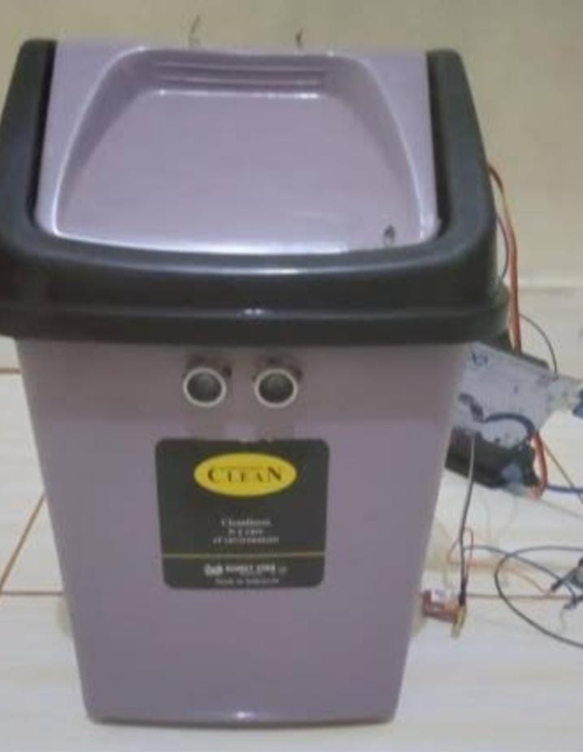

TOMAS | TECH TITANS
Kelompok Tech Titans membuat rekayasa teknologi
berupa tempat sampah yang mengenakan sensor otomatis untuk membukanya. Tujuan kami
membuat tempat sampah untuk memudahkan warga SMA N 1 PEKALONGAN untuk
membuang sampah tanpa harus menyentuhnya. Banyak orang yang beranggapan bahwa
tempat sampah adalah hal yang kotor sehingga masih banyak ditemukan sampah yang masih
tercecer di sekitar tempat sampah. Dengan diciptakannya tempat sampah otomatis ini
diharapkan dapat mengurangi jumlah sampah yang tercecer disekitar tempat sampah dan
memudahkan warga sekolah untuk tetap mejaga kebersihan diri.
Kembali